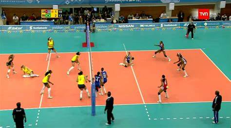

VOLEIBOL
Origen
El voleibol fue creado el 9 de febrero de 1895 por William George Morgan, entrenador deportivo de la Asociación Cristiana de Jóvenes (YMCA) en Holyoke. El voleibol fue ideado en principio como una alternativa más sosegada al baloncesto Morgan se vio en la necesidad de crear una actividad física alternativa y de menor intensidad que el baloncesto, deporte creado por su compañero James Naismith en 1891, el cual pudiese ser practicado tanto por jóvenes como por personas adultas en espacios cerrados o abiertos. De esta manera nació el voleibol bajo el nombre de mintonette. Para su creación Morgan tomó en cuenta todas las técnicas deportivas que él ya conocía y ponía en práctica con sus alumnos, su finalidad era crear un juego por equipos para entrenar y competir, por tanto estableció tanto sus primeras reglas como los elementos del juego. En el año 1896 Morgan realizó la primera presentación pública del voleibol en una conferencia de las diversas asociaciones YMCA. Desde ese momento el voleibol consiguió gran receptividad y comenzó a expandirse por diversos países.
¿Qué es?
El voleibol es un deporte que se juega con una pelota y en el que dos equipos, integrados por seis jugadores cada uno, se enfrentan sobre una área de juego separada por una red central.
Picha aquí para saber en que consiste el juego Reglas del Voleibol
- Campo de juego o cancha Picha aquí para saber más
- La red o la malla Picha aquí para saber más
- Pelota o balón Picha aquí para saber más
- Equipos Picha aquí para saber más
- posiciones y rotaciones Picha aquí para saber más
Metodos de saque

Uno de los objetivos del saque en voleibol es poner el balón en juego, pero también es importante dificultar la acción para que el equipo contrario al recibir la pelota de voley se le complique. Para que este servicio sea efectivo, preciso y seguro existen diferentes tipos de saque en voleibol, pudiendo diferenciar en ellos la trayectoria y la forma de golpeo.
Tipos de saque
- Saque bajo en voley (saque de abajo) Picha aquí para saber más
- Saque alto en volleyball (saque por encima) Picha aquí para saber más
- Saque flotante en voleibol Picha aquí para saber más